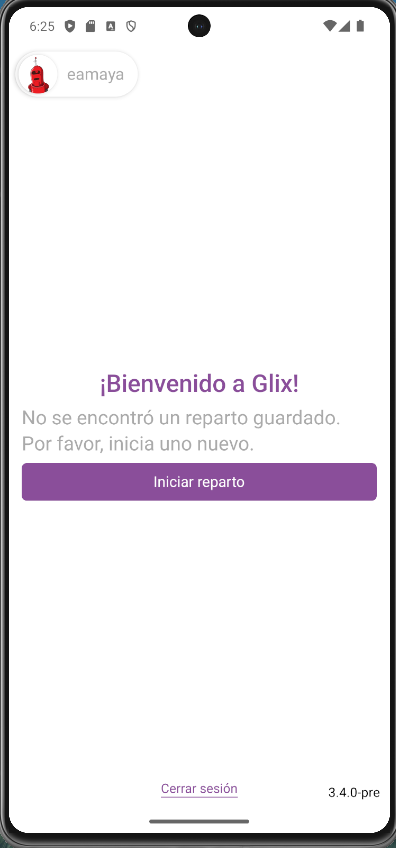
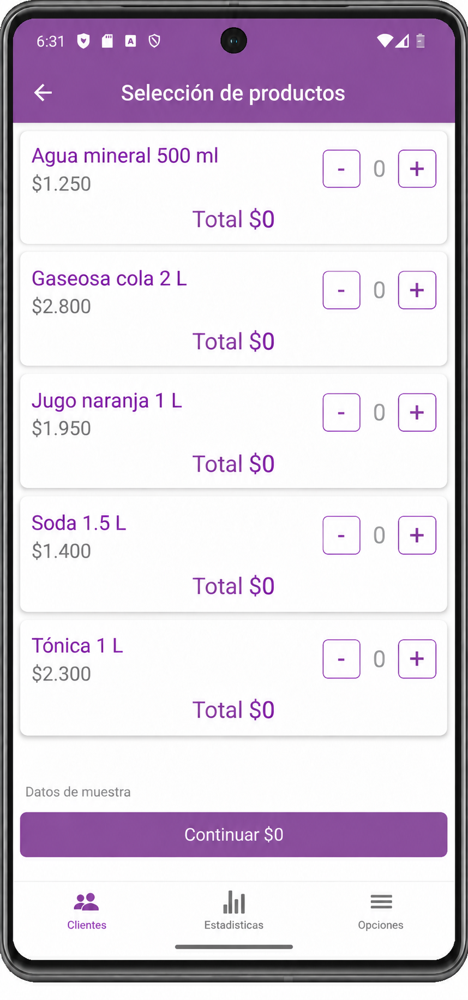

Nuevos clientes
La app permite dar de alta clientes para incorporarlos al circuito comercial.
Clientes, stock, saldos y pedidos disponibles para acompañar el trabajo comercial en movimiento.
Conocer appLa app móvil de GLIX acompaña al equipo comercial en la atención de clientes y en el registro de ventas.
Permite dar de alta clientes, geocodificarlos en vivo, vender con stock en línea y consultar el historial de saldos y pedidos.


El vendedor puede registrar clientes desde la app y asociar su ubicación durante el trabajo en campo.
La app permite dar de alta clientes para incorporarlos al circuito comercial.
La ubicación del cliente puede registrarse en vivo desde el dispositivo móvil.
La venta se realiza con consulta de stock en línea, para trabajar con la información disponible durante la operación comercial.
El equipo comercial puede vender desde la app móvil de GLIX.
El stock en línea acompaña la venta desde el dispositivo.
Antes de tomar un nuevo pedido, el vendedor puede revisar información previa del cliente desde la app.
Consulta del historial de saldos del cliente para tener contexto sobre su cuenta.
Consulta de pedidos anteriores para entender la relación comercial.
Escribinos para conversar sobre el trabajo de tu equipo comercial.